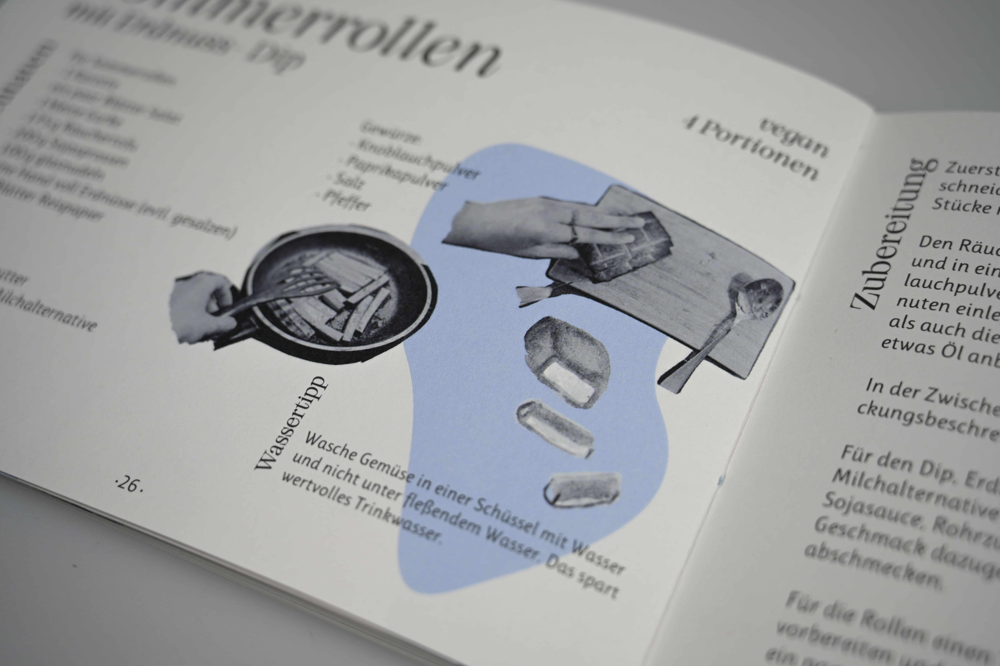
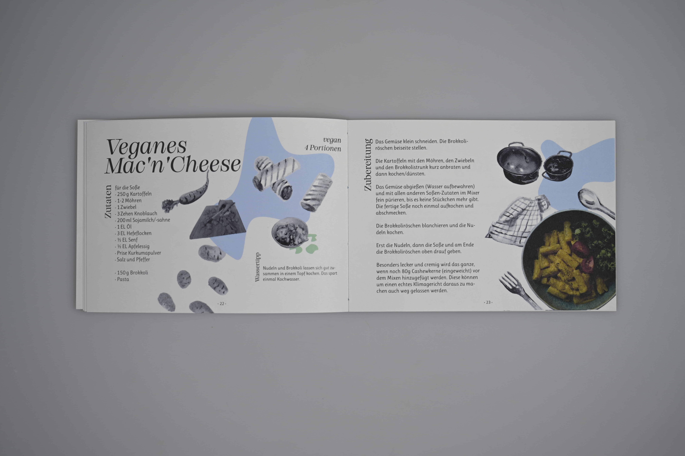
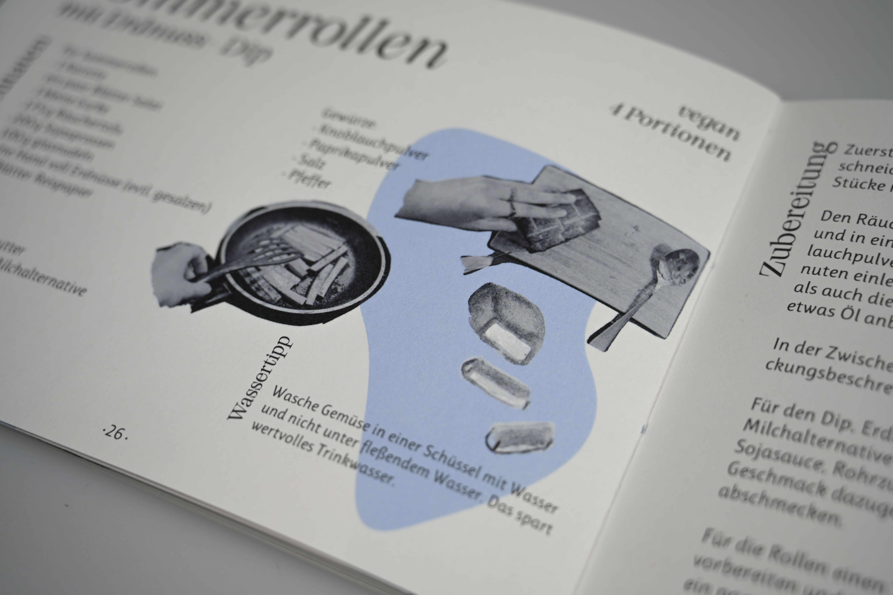
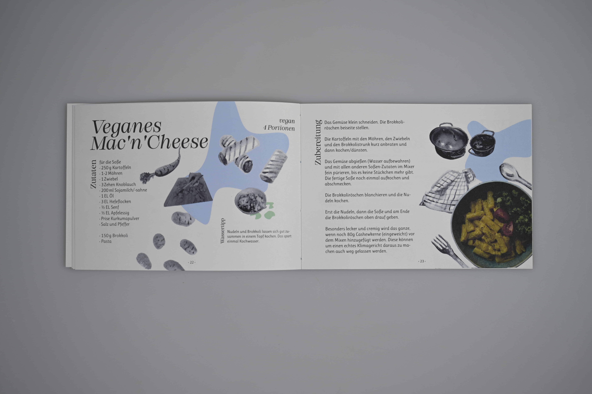

Individual work
Includes: Cookbook A5 with 32 pages
Some topics need more attention.
The topic of water availability in connection with climate change is often not so present.
The cookbook creates visibility by supplementing ten sustainable recipes from
the Eberswalde University for Sustainable Development
with infographics and tips on the topic of water consumption and saving water.

 


